01 / INFORME
Planificación
Problema, usuarios, objetivos, alcance y organización del proyecto.
Leer informeINTELIGENCIA ARTIFICIAL APLICADA · UEES
Un asistente de generación aumentada por recuperación (RAG) que conecta las consultas con sus fuentes. Explore la documentación académica y pruebe la implementación en el Galápagos Life Fund.
LA ENTREGA
Lea aquí o descargue la versión que prefiera.
Problema, usuarios, objetivos, alcance y organización del proyecto.
Leer informeFuentes, preparación del corpus, análisis exploratorio y visualizaciones.
Leer informeCómo se conectan el portal, los modelos y los servicios de recuperación.
Leer informeExperimentos, resultados, pruebas y alcance de las mediciones.
Leer informePrivacidad, sesgos, explicabilidad y responsabilidad humana.
Leer informeAcceso, consultas, fuentes, modelos, historial y manejo de errores.
Leer informeRecorrido de la entrega y correspondencia con los criterios de evaluación.
Leer informeNo se encontraron informes con esos términos. Pruebe otra palabra o limpie la búsqueda.
REPRODUCIBILIDAD
PRESENTACIÓN DEL EQUIPO
Grupo 10 · Schubert Lombeida Manjarrez y Niko Dimitri Jiménez Bruno · Edición 24 de octubre de 2026
El proyecto implementa un asistente de consulta de evidencia normativa para especialistas del Galápagos Life Fund (GLF). Integra búsqueda documental, generación con citas y acceso a las fuentes originales. La entrega reúne el código reproducible, los experimentos de desarrollo, las comprobaciones funcionales y el protocolo de evaluación. Los resultados reportados describen ese alcance; no constituyen una estimación independiente de impacto institucional.
El informe presenta el problema, los objetivos, la organización del trabajo, los recursos y los controles de la solución. Los antecedentes de las semanas 1 a 5 se conservan en sus versiones entregadas.
Los requisitos ambientales y sociales están repartidos entre el Manual del Sistema de Gestión Ambiental y Social (SGAS), sus anexos y referencias complementarias. El especialista necesita localizar la disposición aplicable, comprobar su fuente y distinguir una obligación de una recomendación. Una respuesta sin evidencia puede inducir omisiones o requisitos inexistentes.
El usuario principal es el personal técnico que revisa proyectos. Los administradores mantienen corpus, permisos y servicios. Los postulantes son beneficiarios indirectos de una revisión más consistente; el asistente no determina su elegibilidad ni asigna financiamiento. La profesora evalúa reproducibilidad y fundamento técnico mediante el repositorio y un acceso de demostración que se comparte por un canal separado.
El objetivo es recuperar evidencia relevante y producir apoyo documental trazable, manteniendo la decisión en el especialista. Las metas históricas se conservan como objetivos y no como resultados alcanzados de la nueva evaluación.
| Criterio | Definición operativa y meta histórica | Evidencia necesaria |
|---|---|---|
| Cobertura de recuperación | Recall@5 macro de al menos 80 % | Pasajes relevantes anotados por especialista |
| Precisión de recuperación | Precision@5 macro de al menos 80 % | Mismo corpus, preguntas y top k |
| Trazabilidad | Toda respuesta generada con citas comprobables | Verificación de contrato y revisión semántica |
| Tiempo | Reducción mediana de al menos 20 % | Comparación manual y asistida incluyendo lectura de citas |
| Utilidad | Promedio de al menos 4 sobre 5 | Instrumento aplicado a especialistas |
| Latencia | Percentil 95 de hasta 7 segundos | Medición completa con red, recuperación y generación |
Hit@5 mide si aparece al menos un pasaje correcto y no equivale a Recall@5. La existencia de un identificador válido tampoco demuestra que la cita respalde la afirmación.
Se incluyen recuperación lexical BM25, consulta semántica E5, generación con evidencia, tratamiento de insuficiencia documental, fuentes con páginas y una interfaz conectada al portal. El repositorio incorpora una interfaz académica que permite reconstruir la búsqueda con documentos oficiales públicos, además de una copia de la integración real.
Se excluyen aprobación automática, calificación jurídica vinculante, entrenamiento de un modelo de lenguaje con expedientes personales, clasificación demográfica y promesas de generalización no medidas. La fusión BM25 con E5 está disponible como comparación experimental en el núcleo académico. La generación del portal utiliza BM25 y Qwen; la búsqueda E5 opera por separado.
| Periodo | Etapa | Productos documentados |
|---|---|---|
| 19 al 25 de septiembre | Definición, fuentes y objetivos | Documentos de semana 1 y evaluación SMART |
| 26 de septiembre al 2 de octubre | Corpus y baseline lexical | Inventario EDA y decisión técnica |
| 3 al 16 de octubre | Recuperación semántica y RAG | Código E5, BM25, servicio Qwen e integración |
| 17 al 23 de octubre | Piloto y entrega | Análisis ético, portal y preparación de este paquete |
El cronograma organiza las etapas del proyecto. Los resultados y configuraciones se relacionan con los archivos y versiones que los documentan.
El Grupo 10 está integrado por Schubert Lombeida Manjarrez y Niko Dimitri Jiménez Bruno. La planificación distribuye corpus, recuperación y evaluación en el frente de datos, e integración web, permisos y flujos en el frente de aplicación. La autoría de la entrega es conjunta.
Los recursos son el portal Next.js en Vercel, Supabase para datos y búsqueda vectorial, servicios en Hugging Face, código Python y documentación normativa. El generador utiliza un proveedor de inferencia remoto; el modelo no se entrena dentro de Vercel. La entrega local utiliza un entorno Python aislado y versiones fijadas. Las credenciales y expedientes no forman parte del repositorio público.
| Riesgo | Consecuencia | Control definido |
|---|---|---|
| Evaluación con etiquetas no independientes | Estimación sesgada de calidad | Exigir revisión de pasajes por un especialista distinto del autor de preguntas |
| Cambio de corpus o modelo | Resultados no comparables | Registrar huella, versión, fecha y configuración |
| Fuente pública sin licencia de redistribución | Publicación indebida de documentos | Publicar enlaces y script de descarga local |
| Servicio externo no disponible | Consulta sin respuesta | Error comprensible y consulta de fuentes |
| Filtración de expedientes | Afectación a titulares | Corpus público separado, secretos solo en servidor |
Cada resultado registra versión, entorno, corpus, preguntas, partición y fecha. Los parámetros se seleccionan con desarrollo y validación; el conjunto de prueba se reserva para la evaluación de la configuración fijada. Un cambio de corpus exige revisar los pasajes anotados. La evaluación independiente utiliza anotaciones identificadas, conteos por tema y revisión de afirmaciones; las mediciones históricas se presentan por separado.
Grupo 10 · Schubert Lombeida Manjarrez y Niko Dimitri Jiménez Bruno · Edición 24 de octubre de 2026
La documentación del proyecto contiene varios conjuntos con funciones distintas. Separarlos evita atribuir a un corpus las métricas obtenidas con otro. La muestra de expedientes sirve para estudiar estructura documental; el corpus normativo sirve para recuperar evidencia; las preguntas anotadas permiten evaluar calidad. Ninguno sustituye a los demás.
| Conjunto | Tamaño documentado | Función | Publicación |
|---|---|---|---|
| Expedientes de proyectos | 26 proyectos y 56 documentos | Contexto y exploración documental | No se publica el contenido privado |
| Fragmentos de expedientes | Aproximadamente 250 en el EDA histórico | Análisis de longitudes y particiones | Solo agregados históricos |
| Corpus normativo español | 585 fragmentos de 36 documentos | Ruta E5 y experimentos históricos | No se redistribuye el ZIP |
| Corpus público del servicio Qwen | Siete PDF oficiales | Recuperación lexical y generación | Manifiesto, enlaces y descarga local |
La semana 1 y la ficha técnica reportan 148082 palabras para los expedientes. Un JSON posterior de EDA reporta 147470. Se conservan ambas cifras con su procedencia; no se mezclan como si fueran el mismo cálculo ni se corrigen retrospectivamente los documentos remitidos. Los agregados históricos reportan 26 documentos en español y 30 en inglés, y particiones de 18 proyectos de desarrollo, 4 de validación y 4 de prueba.
La revisión normativa del 12 de octubre encontró 585 fragmentos españoles, frente a 584 citados en un README anterior. También distinguió 62 fragmentos de traducción GLF y 523 de textos normalizados, incluidas guías derivadas. Es incorrecto describir todo ese material como normativa oficial original. La versión exacta debe determinarse por su huella y su manifiesto.
El manifiesto data/sources.json identifica Manual SGAS y anexos A, B, D, F, H y J en el dominio oficial del GLF. El script descarga únicamente esas URL HTTPS, comprueba cabecera PDF y límite de tamaño, calcula SHA256 y extrae texto por página. Guarda originales y pasajes solo en carpetas locales excluidas de Git.
Cada pasaje conserva document_id, chunk_id, source_name, source_url, page, language y text. El tamaño objetivo es 1200 caracteres con 180 de solapamiento y corte preferente en un espacio. La página es una coordenada documental real; no se inventa una página a partir de un número de fragmento. El recuento reconstruido y las versiones descargadas se registran en results/metrics/public_sources_manifest.json y public_eda.json.
El corpus histórico E5 utilizó otra preparación: 585 fragmentos dieron lugar a 3549 ventanas de aproximadamente 800 caracteres con avance de 700. Esas ventanas mantienen su fragmento de origen. Un resultado de esa ruta no es directamente comparable con el de siete PDF sin reconstruir antes un corpus común.
La ejecución produjo siete documentos, 98 páginas y 271 fragmentos. No encontró páginas sin texto extraíble ni duplicados exactos. La mediana fue 1192 caracteres y 174 palabras por fragmento; los seis campos de trazabilidad examinados estuvieron presentes en los 271 registros. Estos controles no sustituyen la revisión del contenido extraído ni la anotación de relevancia.
El cuaderno 01_exploracion produce las figuras y el resumen numérico del corpus público. No necesita expedientes privados ni etiquetas de relevancia. Las seis figuras responden a preguntas distintas y se calculan desde los pasajes descargados.
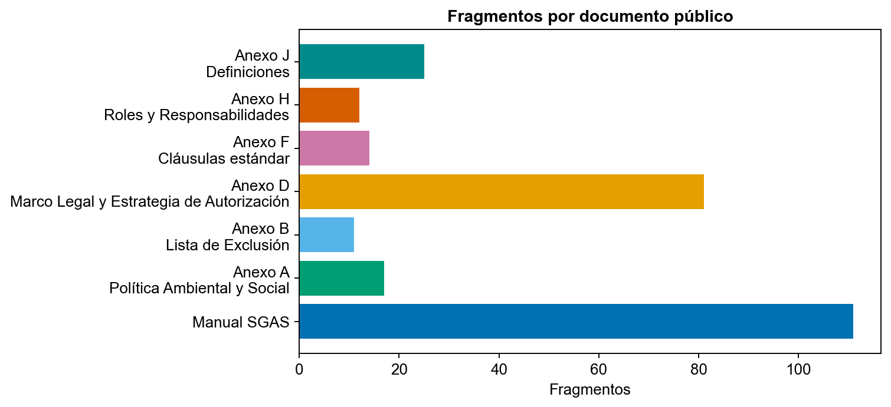
La distribución de fragmentos muestra qué documentos dominan el índice. Una fuente extensa puede ocupar muchos puestos del top k; el número de fragmentos no implica mayor autoridad normativa.
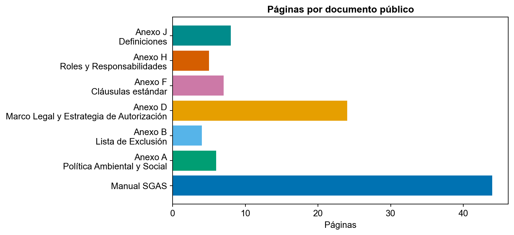
El número de páginas permite relacionar cobertura y extensión. La extracción no usa OCR: las páginas sin texto extraíble deben revisarse antes de interpretar una ausencia como inexistencia de la norma.
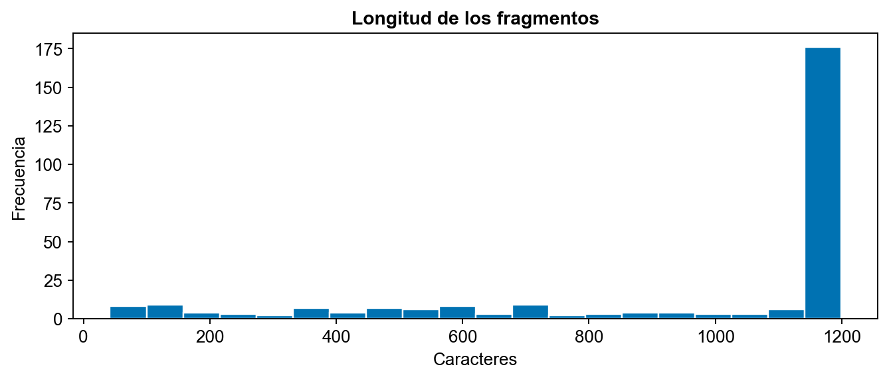
El histograma permite detectar fragmentos breves y la concentración cerca del límite. Las repeticiones por solapamiento son intencionales y no deben tratarse como observaciones independientes para inferencia estadística.
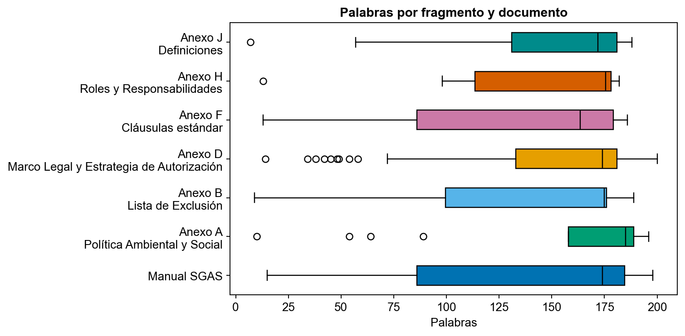
La variación de palabras por documento ayuda a detectar tablas, listas o extracción irregular. No se presume que un fragmento largo sea mejor evidencia.
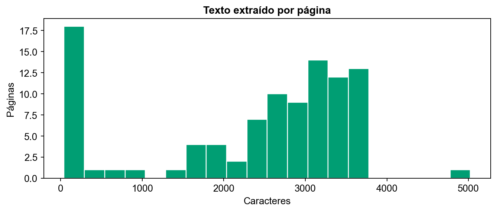
El gráfico de caracteres por página identifica valores extremos para inspección. No se elimina una página solo por ser extensa o corta: podría contener una portada, un cuadro o una disposición esencial.
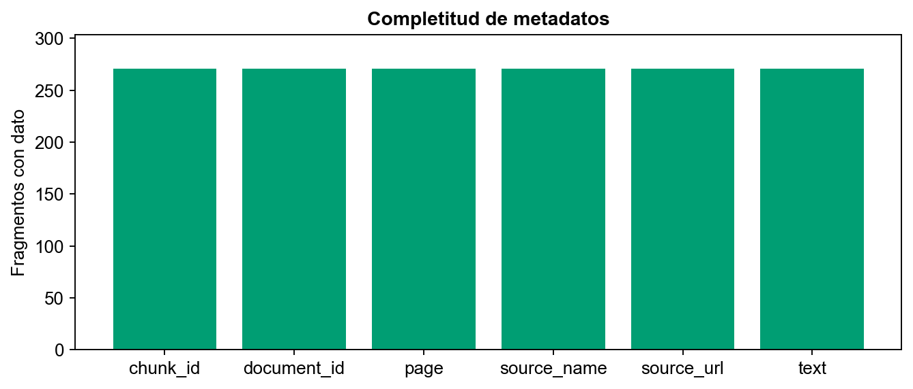
La completitud comprueba la trazabilidad mínima. Es una validación estructural, no una medición de relevancia o de comprensión correcta del PDF.
Se rechazan identificadores duplicados, páginas no positivas, fuentes fuera del dominio permitido y pasajes vacíos. Las páginas sin texto y los duplicados exactos se contabilizan en el EDA. No se sustituyen por textos sintéticos. Los valores extremos se conservan para inspección y el solapamiento se documenta.
La fragmentación pequeña facilita citas legibles, pero puede separar una excepción de su regla. Por ello la interfaz abre el PDF en su página y exige revisión humana. Las versiones normalizadas o traducidas necesitan una indicación de autoridad antes de usarse para fundamentar una exigencia.
El protocolo propone entre 40 y 60 preguntas sobre un corpus congelado, equilibradas por tema, con 10 a 15 no contestables. Los pasajes correctos deben anotarlos especialistas ajenos a la generación de las preguntas. Las preguntas frecuentes pueden utilizarse como insumo de muestreo. Una respuesta sin páginas y sin revisión especializada no constituye por sí sola un conjunto de referencia independiente.
Se separan desarrollo, validación y test por intención de pregunta. Reformulaciones cercanas pertenecen a la misma partición. Las decisiones de parámetros se toman antes del test. BM25 y E5 reciben los mismos pasajes, identificadores y preguntas. Si cambian los PDF, se genera una nueva huella y se revisan las anotaciones afectadas.
Los PDF públicos mantienen los derechos de sus titulares. El repositorio enlaza las fuentes y permite descargarlas localmente; no aplica MIT a documentos ajenos. Los expedientes, nombres de proponentes y credenciales quedan excluidos. La publicación se limita a fuentes enlazadas, código y agregados documentados. La evaluación incluida caracteriza la preparación del corpus y los experimentos de desarrollo; no aporta una estimación de calidad sobre preguntas anotadas de forma independiente.
Grupo 10 · Schubert Lombeida Manjarrez y Niko Dimitri Jiménez Bruno · Edición 24 de octubre de 2026
La solución combina un portal web, almacenamiento y recuperación en Supabase y dos rutas de inferencia documental. El portal es la interfaz funcional del proyecto y está publicado en https://glf-postulaciones.vercel.app/. Este repositorio académico copia los componentes RAG necesarios para explicar la integración y conserva su procedencia. No es una réplica de todos los módulos administrativos del sistema de subvenciones.
La referencia del portal revisada es el commit a5a7e5a3ec8703990c2f62ce559536ac0a1eba94, versión 0.7.62. El manifiesto integration/source_manifest.json relaciona cada copia con su ruta y SHA256. La copia no incluye secretos, bases de datos, expedientes ni archivos de entorno reales. Los archivos de integración se conservan como instantánea de evidencia; la ejecución autónoma documentada corresponde a app/app.py.
El contexto de revisión puede separar retrieval_query, orientada al riesgo concreto, de la pregunta de generación. El adaptador conserva hasta tres pasajes específicos y una referencia procedimental cuando la consulta lo necesita. Esa selección no constituye un juicio automático sobre el proyecto.
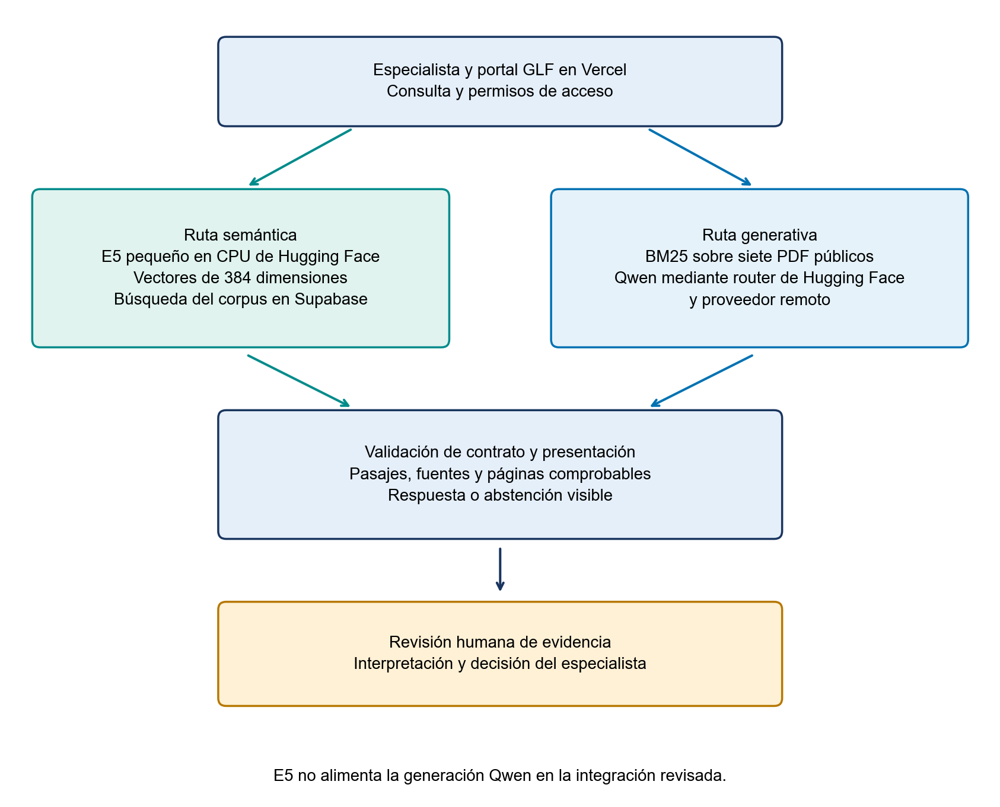
El Space E5 es https://huggingface.co/spaces/Schubertlm/glf-e5-inference y su API de vectores es https://schubertlm-glf-e5-inference.hf.space/embed. La interfaz de Hugging Face mostró estado Running y modalidad protected en la revisión del 23 de octubre. Esa modalidad mantiene privado el repositorio del Space y permite acceder a su URL de aplicación; la API exige además su propia clave. No se publican esas claves.
El servidor E5, copiado en integration/e5-inference, carga SentenceTransformer en CPU. Recibe de uno a ocho textos por solicitud, añade query: o passage: y genera vectores normalizados. Limita la consulta a 1500 caracteres y el pasaje a 12000. El modelo admite una longitud máxima de tokens que puede truncar textos largos; el límite de caracteres no demuestra que no haya truncamiento. La configuración identifica el modelo por nombre, sin fijar una revisión inmutable de sus pesos. Por ello la reproducción debe registrar también la revisión resuelta y la tokenización efectiva.
El Space generativo es https://huggingface.co/spaces/Schubertlm/glf-rag-bm25-qwen. Su ruta /api/ask-stream entrega etapas de procesamiento y resultado; /api/ask conserva compatibilidad con clientes anteriores. El adaptador documentado es la versión 1.7 y el portal la versión 0.7.62.
La comprobación funcional del 24 de octubre registró consultas Qwen breves y ampliadas, recuperación E5 y manejo de indisponibilidad del proveedor. Una consulta ampliada respondió en 35.2 segundos y otra consulta E5 recuperó seis pasajes en 1.2 segundos. Son observaciones individuales, no un benchmark. Los registros completos y sus diferencias de configuración están en results/live_v0762 y results/reports/quality_verificacion_20261024.json.
Las instantáneas de integración conservan el código de origen y su procedencia. El manifiesto identifica las versiones utilizadas por este informe. Los registros históricos de conectividad se mantienen como evidencia de sus ejecuciones y no sustituyen la descripción de la configuración actual.
| Componente | Implementación revisada | Entrada y salida |
|---|---|---|
| Representación semántica | intfloat/multilingual-e5-small | Texto query o passage hacia vector de 384 dimensiones |
| Recuperación lexical | BM25-heading-authority-v2 | Consulta hacia hasta cinco pasajes con fuente y página |
| Generación configurada | Qwen/Qwen2.5-72B-Instruct:deepinfra | Contexto y pregunta hacia texto con identificadores de cita |
| Validación de evidencia | Contrato Python y Zod del portal | Respuesta remota hacia resultado aceptado o error/abstención |
| Datos y permisos | Supabase | Corpus y expedientes separados con controles de acceso |
E5 transforma textos en vectores; no redacta respuestas. La tarjeta del modelo describe prefijos query y passage, normalización y límite de tokens. El código servidor verifica identidad del modelo, 384 valores finitos y norma no nula, y normaliza el vector. La comparación semántica utiliza similitud vectorial; esa puntuación no es una probabilidad de que una norma aplique.
En la configuración documentada de despliegue, Qwen se invoca a través del router de inferencia de Hugging Face y un proveedor remoto. Hugging Face aloja la aplicación Flask; no debe afirmarse que el modelo de 72 mil millones de parámetros se ejecuta en la CPU del Space. HF_TOKEN permite la inferencia y DEMO_ACCESS_CODE protege la API. El identificador 72B corresponde al runtime de integración, mientras que el archivo upstream conserva por defecto un modelo 7B; la documentación y los benchmarks deben declarar cuál se ejecutó realmente.
El recuperador histórico normaliza acentos, tokeniza y calcula BM25 para cuerpo y encabezados. La configuración congelada combina cuerpo con k1 igual a 0.8 y b igual a 0.2, encabezados con k1 igual a 1.2 y b igual a 0.3, peso 0.30 de encabezados y 0.15 de prioridad GLF. Es una prioridad editorial limitada, no una medida de certeza. Una priorización puede recuperar fuentes aun con coincidencia escasa; la abstención debe medirse de extremo a extremo.
El código upstream se conserva como procedencia. El adaptador 1.7 aplica glf-grounded-v1: selecciona hasta cinco pasajes sin volver a recortar su texto, elimina duplicados y conserva identificador, página y fuente. No altera la fragmentación original. La pregunta y los documentos se delimitan como datos; el prompt distingue requisitos, definiciones, condiciones, fases y aspectos sin evidencia. Cada afirmación documental debe citar un identificador del contexto. La comprobación formal de citas no prueba su soporte semántico.
E5 y Qwen son rutas independientes en la integración revisada. El documento de arquitectura propuesto en una semana anterior incluía fusión y reranker, pero no se presenta esa propuesta como una característica ya desplegada. Los resultados del corpus normativo de 585 fragmentos tampoco se transfieren al corpus público de siete PDF.
El modo breve usa un límite de 700 tokens de salida y una orientación de 200 palabras. El ampliado usa 1500 tokens y una orientación de 450 palabras. Son límites de generación, no compromisos de longitud ni medidas de exactitud. El contexto admite hasta 12000 o 18000 caracteres, respectivamente; no son tokens exactos y puede contener menos de cinco pasajes.
Los reintentos de transporte y corrección de citas comparten un máximo total de dos solicitudes al proveedor y un presupuesto de 50 segundos. Si el proveedor informa fin por longitud o salida incompleta, la respuesta parcial no se publica como resultado válido. Se conservan los pasajes para revisión. Cuando no hay evidencia suficiente se mantiene la abstención.
El detalle de ejecución registra modo, política, modelo efectivo, IDs del contexto, huella SHA-256 del corpus público, intentos, tiempos y tokens que realmente reporta el proveedor. Un consumo ausente se identifica como no reportado; uno parcial no se transforma en costo cero. Los registros del servidor contienen metadatos operativos, sin guardar la pregunta ni el texto de los documentos.
El Space continúa como coordinador en CPU Basic; los pesos de Qwen se ejecutan en DeepInfra mediante Hugging Face. La configuración mantiene el mismo nivel de infraestructura y proveedor. Una respuesta más larga puede consumir más inferencia. La consulta extendida es optativa y el modo breve es el inicial.
El servidor E5 recibe JSON con inputs y kind. Debe responder model y embeddings. La solicitud usa HTTPS, rechaza redirecciones y permite un reintento ante fallos transitorios de transporte o estados 502, 503 y 504, con espera máxima de 25 segundos por intento. No se cambia de modelo silenciosamente ante un error.
La consulta Qwen acepta entre 3 y 600 caracteres. El contrato exige generated, answer, sources, results y tiempos. Cada fuente debe ser HTTPS del dominio oficial, tener página positiva y corresponder al pasaje devuelto. Las referencias no pueden duplicarse. Una abstención mantiene sources vacío; los resultados pueden mostrarse como material para revisión, sin atribuirles una afirmación generada.
El portal limita a 60 segundos la comunicación remota y el navegador a 80 segundos de espera. La ruta de Vercel admite hasta 90 segundos. Detener espera cancela la recepción del navegador, pero no garantiza detener un trabajo ya recibido por el proveedor. El adaptador limita su presupuesto de generación y reintento a 50 segundos. El servicio aplica límites temporales por dirección IP y una cuota global diaria en memoria. Estos controles reducen abuso, pero se reinician con el proceso y no equivalen a un límite persistente de gasto. El presupuesto del proveedor debe administrarse por separado.
El servidor del portal transmite eventos NDJSON, es decir, objetos JSON separados por saltos de línea. E5 informa transformación de la consulta y búsqueda en Supabase. El servicio generativo informa recuperación BM25, preparación de evidencia, generación Qwen y comprobación de referencias desde el código que realiza cada operación. El nombre completo del modelo procede de la configuración efectiva; el reloj del navegador mide espera y no simula un porcentaje de avance.
Los contratos validan tamaño, eventos, resultados e identificadores de fuente. Los mensajes distinguen entrada inválida, desconexión, espera agotada, cuota, configuración, indisponibilidad, permisos y respuesta inválida. Los errores conservan la pregunta y ofrecen reintento únicamente cuando corresponde. El historial mantiene cinco resultados en memoria de la pantalla y se vacía al salir o cambiar de contexto. Las notas asociadas a riesgos conservan sus permisos y su almacenamiento habitual.
La interfaz académica Flask funciona en 127.0.0.1:8766. Sin credenciales ejecuta una búsqueda BM25 local y la identifica como recuperación, sin simular generación. Si se configuran GLF_RAG_URL y GLF_RAG_KEY en el servidor, puede usar el servicio autenticado del portal. El modo remoto nunca incorpora la clave al HTML.
requirements.txt fija las dependencias académicas; environment_lock.txt captura las versiones efectivamente instaladas. El código del portal conserva su package.json y lockfile en integration/portal/web. El servicio original conserva runtime.py, Dockerfile, requirements y UPSTREAM.json. Construir el índice en src/train.py no entrena un LLM: genera una configuración JSON con la huella de los datos.
La evidencia observable es el pasaje, la fuente, la página, el identificador y el tiempo. No se muestra un porcentaje de confianza fabricado a partir del puntaje de BM25 o del coseno de E5. La verificación de formato previene citas inexistentes, pero no detecta todas las contradicciones, omisiones o interpretaciones erróneas. La revisión independiente de afirmaciones es necesaria para medir ese problema.
Fuentes técnicas: Robertson y Zaragoza, BM25 and Beyond, https://doi.org/10.1561/1500000019; Wang y colaboradores, Multilingual E5 Text Embeddings, https://arxiv.org/abs/2402.05672; tarjeta E5, https://huggingface.co/intfloat/multilingual-e5-small; Lewis y colaboradores, Retrieval Augmented Generation, https://arxiv.org/abs/2005.11401.
Grupo 10 · Schubert Lombeida Manjarrez y Niko Dimitri Jiménez Bruno · Edición 24 de octubre de 2026
El proyecto contiene dos líneas de experimentación: un clasificador exploratorio de relevancia de pares consulta y pasaje, presentado en la semana 4, y una optimización posterior del recuperador BM25. Se describen separadamente porque tienen objetivos, datos y métricas distintos. Los archivos históricos se preservan en results/metrics/historical con su procedencia y no se presentan como nuevas mediciones ni como validación independiente del portal.
El reporte utilizó 50 pares propuestos por IA a partir de los cinco primeros resultados BM25 para diez consultas. Tras excluir tres pares inciertos y uno duplicado entre particiones, quedaron 28 pares de entrenamiento, nueve de validación y nueve de prueba. Los datos se separaron por consulta. No hubo validación humana independiente y el conjunto de prueba tenía ocho positivos y un negativo.
La representación TF IDF de unigramas y bigramas se ajustó solo con entrenamiento y produjo 24001 características al concatenar consulta, documento, interacción y coseno. Se compararon descenso de gradiente sin regularización, regularización L2 y parada temprana. Estos experimentos no entrenaron E5 ni Qwen.
| Configuración histórica | Pérdida de validación | Exactitud balanceada de validación | Lectura |
|---|---|---|---|
| Base de 200 épocas | 0.8662 | 50 % | Referencia exploratoria |
| L2 con alfa 0.01 | 0.6801 | 50 % | Menor pérdida sin mejora de discriminación |
| Parada temprana restaurando época 2 | 0.6235 | 50 % | Mejor pérdida de validación, mismo problema de clase |
En prueba, todas las variantes predijeron la clase positiva. La exactitud de 88.9 % se explica por el desbalance de ocho positivos entre nueve casos; la exactitud balanceada fue 50 % y F1 macro 0.4706. El resultado no justifica desplegar ese clasificador. No se vuelve a elegir una configuración mirando el test.
Los archivos posteriores registran un corpus de 585 fragmentos y 38 preguntas de desarrollo, divididas en 27 train y 11 validation. La primera etapa varió k1 y b. La segunda añadió encabezados y una prioridad moderada a fuentes GLF. El archivo optimization_summary.json conserva los resultados, y delimita su uso como resultados de desarrollo con anotación no independiente.
| Configuración reportada | Recall@5 de desarrollo | Estado de la evidencia |
|---|---|---|
| BM25 base k1 1.5 y b 0.75 | 68.9 % | Resultado histórico |
| BM25 ajustado k1 1.0 y b 0.2 | 71.5 % | Resultado histórico |
| BM25 con encabezados y prioridad GLF | 83.6 % | Resultado histórico, no gold independiente |
La mejora histórica de 14.7 puntos porcentuales compara configuraciones sobre ese conjunto de desarrollo. No demuestra mejora sobre nuevas preguntas, E5-small ni la versión publicada de 72B. Su alcance es el conjunto de desarrollo descrito, sin extrapolación a precisión normativa en producción.
La documentación histórica describe una rejilla post congelamiento de 320 combinaciones: k1 en 0.6, 0.8, 1.0 y 1.2; b en 0.0, 0.2, 0.4 y 0.75; peso de encabezados en 0.0, 0.15, 0.30 y 0.45; prioridad GLF en 0.0, 0.05, 0.10, 0.15 y 0.20. Los CSV marginales e interacciones se conservan como evidencia recibida. No se dispone aquí de todas las ejecuciones individuales de la rejilla ni se afirma haberla repetido.
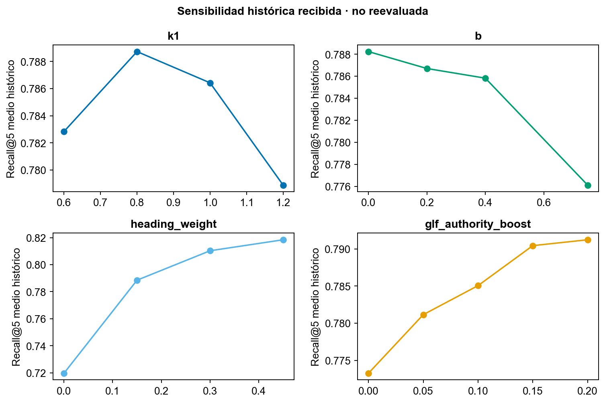
En un recuperador se adapta la dependencia parcial a la media de Recall@5 sobre combinaciones de hiperparámetros. Esta visualización es un análisis de sensibilidad de una métrica, no una explicación causal de atributos de personas ni el PDP de un clasificador supervisado.
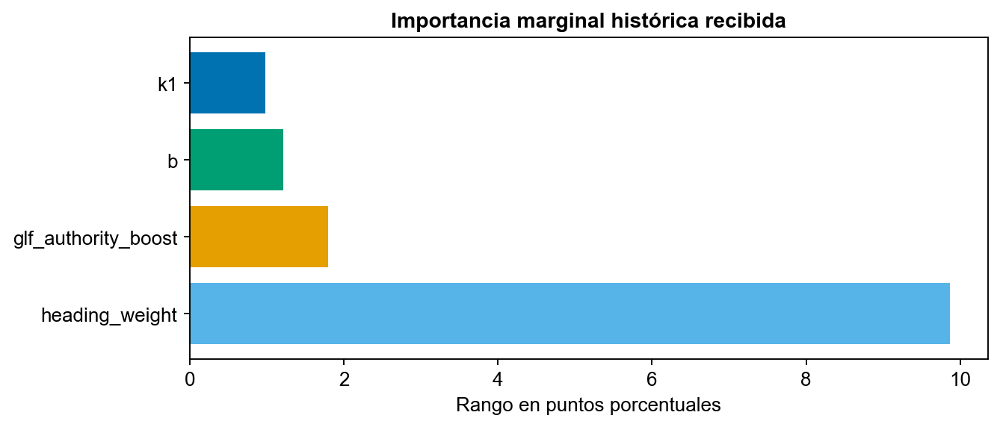
El rango entre el mayor y menor promedio marginal fue 9.87 puntos para encabezados, 1.80 para prioridad GLF, 1.21 para b y 0.98 para k1. Depende de los rangos explorados y de la muestra; no es una clasificación universal de importancia.
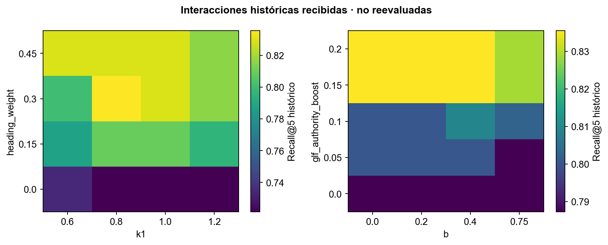
Las interacciones conservadas relacionan k1 con peso de encabezados y b con prioridad GLF. La región descrita favoreció encabezados cercanos a 0.30. El análisis caracteriza la sensibilidad histórica; no estima rendimiento sobre un conjunto externo de prueba.
Un benchmark anterior reportó 40 consultas exitosas con Qwen 7B local, tres calentamientos excluidos, mediana 1.815 segundos y percentil 95 de 4.617 segundos. Son resultados del entorno local documentado en ese experimento. No miden el portal Vercel, el proveedor DeepInfra ni el arranque en frío de los servicios actuales. La entrega separa las comprobaciones funcionales y la latencia de una consulta de un benchmark.
Para comparar BM25 y E5 se congelará el mismo corpus y top k igual a cinco, y se evaluarán las mismas preguntas. Se registrarán errores, calentamiento y tiempos por etapa. Los ajustes se harán en desarrollo y validación; el test se ejecutará tras fijar la configuración. No se usarán similitudes o distancias como probabilidades de corrección.
El módulo src/evaluate.py calcula Hit@5, Recall@5, Precision@5 y MRR@5 por pregunta y tema. Rechaza preguntas sin aprobación, sin revisor diferente al autor, sin nota de anotación o con una huella de corpus incompatible. Las preguntas no contestables no reciben Recall igual a cero: se excluyen de ese denominador y se evalúan aparte para abstención.
El protocolo define una batería de 40 a 60 preguntas, incluidas 10 a 15 no contestables. Cada pregunta requiere identificación de pasajes y revisión independiente. Los formatos de anotación están en evaluation. Las mediciones incluidas en esta entrega corresponden a desarrollo y comprobación funcional; no se reportan métricas de una batería externa anotada por especialistas.
En una muestra de 20 a 30 respuestas se revisará cada afirmación y su cita. Se contarán abstenciones correctas sobre preguntas no contestables y abstenciones erróneas sobre preguntas contestables. Para proporciones binarias se reportarán conteos e intervalo Wilson al 95 %. Este intervalo no se aplica sin más a un Recall macro de pasajes. El tiempo manual y asistido se comparará por pares, alternando orden e incluyendo la comprobación de fuentes.
Los comandos siguientes ejecutan la evaluación sobre una versión local del corpus y un archivo de anotaciones aprobado. El modo E5 requiere GLF_E5_ENDPOINT y GLF_E5_API_KEY configurados en el servidor. La validación de las anotaciones ocurre antes de solicitar inferencia. Estos comandos documentan el procedimiento; no constituyen resultados de una ejecución independiente.
python -m src.evaluate --labels evaluation/gold_test.jsonl --method bm25
python -m src.evaluate --labels evaluation/gold_test.jsonl --method e5Los reportes se escriben por método para evitar sobrescribir el resultado comparador. Las plantillas no son datos de prueba completos; deben llenarse con las fuentes, páginas, identificadores y revisión independiente reales.
La actualización del 24 de octubre incorpora orientación por tarea, ejemplos editables, límites de entrada, avance real por etapas, modelo ejecutado, reloj, cancelación de espera, referencias numeradas, exportación con fuentes e historial temporal. Los fallos de conexión, cuota, configuración, formato y citas tienen mensajes distintos. La interfaz no transforma similitud en confianza ni presenta una abstención como aprobación del proyecto.
La actualización de calidad supera 33 pruebas de la aplicación académica, 187 pruebas TypeScript y 81 de base de datos y funciones del portal, y 25 pruebas Python del servicio más su smoke test. Se verificaron resultados, error, cancelación, historial y adaptación móvil en navegador, y ambas rutas publicadas con consultas reales. Los archivos results/reports/ux_verificacion_20261024.json y quality_verificacion_20261024.json delimitan la evidencia de cada revisión. Estas pruebas verifican contratos y comportamiento del software; no sustituyen la revisión independiente de respuestas.
src/optimize.py implementa una rejilla de doce combinaciones: k1 en 0.8, 1.2 y 1.5; b en 0.2 y 0.75; peso de encabezados en 0.0 y 0.3. Exige desarrollo y validación con anotaciones aprobadas, rechaza preguntas o grupos de intención compartidos y no recibe test. Selecciona por Recall@5 de validación, desempata con MRR@5 y después con menor peso de encabezados. Conserva todas las ejecuciones por pregunta y genera gráficas a color de sensibilidad, importancia marginal e interacción. Sus pruebas usan datos sintéticos identificados como tales; no son nuevos resultados GLF.
src/evaluate.py permite evaluar BM25, BM25 ajustado, E5 y fusión RRF sobre los mismos registros y metadatos. RRF significa Reciprocal Rank Fusion, fusión mediante el inverso del rango; evita sumar puntajes de escalas distintas. La fusión está disponible para el experimento académico y no se activa en el portal hasta demostrar una ventaja con anotaciones revisadas.
src/answer_evaluation.py resume revisión humana de afirmaciones y utilidad, abstenciones con denominadores separados e intervalos Wilson del 95 %, y tiempos manuales y asistidos pareados. No usa Qwen como juez de sus propias respuestas. La fracción de afirmaciones sustentadas no recibe un intervalo binomial que ignore la correlación dentro de cada respuesta.
El protocolo ejecutable, campos y comandos están en evaluation/README.md. La referencia anterior del portal se conserva en results/baseline_v0761. Una consulta de ejemplo permite observar el cambio de formato, pero no cuantificar una mejora general. Una comparación general requiere preguntas anotadas y revisión independiente de pasajes; una consulta aislada no permite estimar esa mejora.
La implementación aporta evidencia verificable a funcionamiento, usabilidad, código, documentación, optimización, evaluación y ética: modos de respuesta acotados, contratos y errores probados, trazabilidad del contexto y experimentos reproducibles con separación de particiones. El puntaje académico no se anticipa. El alcance empírico se limita a las mediciones documentadas y a las versiones identificadas.
La solución utiliza búsqueda interpretable y validación de fuentes. El clasificador exploratorio no se despliega porque su exactitud balanceada no evidencia discriminación útil. Los resultados históricos fundamentan el diseño y sus límites; las pruebas actuales verifican contratos e interacción. La generalización a preguntas nuevas requiere el protocolo independiente descrito en este informe.
Grupo 10 · Schubert Lombeida Manjarrez y Niko Dimitri Jiménez Bruno · Edición 24 de octubre de 2026
El asistente recupera evidencia para una revisión ambiental y social humana. Su utilidad potencial depende de que localice disposiciones pertinentes, respete la confidencialidad y permita corregir errores. El funcionamiento de una consulta no prueba que mejore decisiones o beneficie a comunidades. El análisis distingue controles presentes en el código, medidas documentales incorporadas y verificaciones empíricas que requieren especialistas.
Se utiliza el marco de gestión de riesgos de inteligencia artificial de NIST como referencia de organización, no como certificación del sistema. Las categorías de probabilidad y severidad propuestas por el equipo son juicios para priorizar acciones y no frecuencias medidas de incidentes.
El corpus puede privilegiar documentos extensos, español, fuentes oficiales disponibles y términos exactos. Una traducción o guía derivada puede recuperar mejor que una disposición original sin tener la misma autoridad. El peso GLF mejora una preferencia editorial, pero no demuestra corrección jurídica.
Mitigación técnica y documental: 1. Identificar documento, idioma, tipo de fuente y versión. 2. Mantener traducciones y normalizaciones identificadas. 3. Equilibrar preguntas por tema y registrar resultados desagregados. 4. Revisar errores donde una excepción quede fuera del fragmento. La estructura y procedencia están documentadas. Los resultados incluidos no estiman diferencias por tema sobre una muestra independiente.
El sistema no clasifica personas ni produce decisiones individuales de concesión. La paridad demográfica no es una métrica adecuada para este recuperador y no se calcula sin datos y una pregunta causal pertinente. Sí es relevante que diferentes temas, idiomas y formas de preguntar reciban apoyo comparable.
Mitigación de evaluación y diseño: 1. Incluir reformulaciones y distintos niveles de lenguaje técnico. 2. Comparar Hit@5 y MRR por tema sobre el mismo corpus. 3. Mantener legibles fuente y página en móvil. 4. Ofrecer acceso directo a los originales cuando la IA falla. La interfaz incluye fuentes legibles; no se afirma haber medido accesibilidad integral ni equidad entre poblaciones.
El repositorio público utiliza manifiestos de documentos oficiales y código. Excluye expedientes, contraseñas, tokens y embeddings privados. El servicio generativo puede recibir una pregunta y su contexto en un proveedor externo: limitar el corpus a normas públicas no impide que el usuario escriba datos personales en la pregunta.
Mitigación técnica y organizativa: 1. No introducir información identificable en consultas de demostración. 2. Mantener secretos en servidor y separar datos de postulaciones de los textos públicos. 3. Definir finalidad, base de legitimación, conservación y responsables antes de tratar datos personales con IA. 4. Revisar condiciones del proveedor, transferencias y procedimientos para derechos e incidentes. Los dos primeros puntos son controles de la entrega y del código; los documentos de gobernanza y su aplicación institucional no se acreditan como aprobados por este trabajo.
La Ley Orgánica de Protección de Datos Personales, su Reglamento y la normativa aplicable de la Superintendencia de Protección de Datos Personales (SPDP) constituyen referencias para la revisión institucional del tratamiento de datos. Esta revisión no declara cumplimiento legal integral. Identificar una ley no sustituye un inventario de datos, una evaluación de riesgos, contratos ni evidencia de ejercicio de derechos.
| Requisito operativo a documentar | Cambio de diseño relacionado | Situación acreditada |
|---|---|---|
| Finalidad y minimización | Corpus público separado de expedientes | Aplicado a este repositorio |
| Seguridad y confidencialidad | Autenticación, claves en servidor y fuentes permitidas | Visible en el código revisado |
| Información a usuarios y límites | Avisos de apoyo documental y revisión de citas | Incluido en interfaz y manual |
| Conservación y derechos | Política y procedimiento institucional | No demostrado mediante este paquete |
| Evaluación del proveedor y transferencias | Identificar ruta de inferencia y datos enviados | Flujo documentado; valoración jurídica fuera del alcance académico |
La interfaz muestra texto recuperado, fuente y página. Los puntajes de BM25 y E5 ordenan documentos; no son probabilidades de verdad. Los controles de citas verifican coherencia formal de identificadores, pero no garantizan que cada afirmación se desprenda del pasaje.
Mitigación técnica y de evaluación: 1. Mostrar qué modo se ejecutó. 2. Distinguir búsqueda sin generación de respuesta con IA. 3. Conservar las citas y abrir la página original. 4. Revisar una muestra de afirmaciones y registrar soportadas, no soportadas y ambiguas. Los tres primeros controles forman parte de la implementación. La revisión de afirmaciones constituye el procedimiento de evaluación semántica; sus resultados independientes no forman parte de las mediciones reportadas.
Una búsqueda más rápida podría reducir trabajo repetitivo y apoyar revisiones consistentes. También puede omitir un criterio, producir una exigencia inexistente o generar dependencia excesiva. En un caso de manglar, por ejemplo, recuperar una definición no basta para establecer si una actividad está excluida: deben revisarse disposición, condiciones y excepciones en el documento completo.
Mitigación de proceso: 1. Registrar el riesgo o pregunta y el fundamento normativo. 2. Pedir al especialista que contraste la disposición y su contexto. 3. Separar sugerencias del asistente de decisiones formales. 4. Medir tiempo con comprobación de citas y utilidad percibida, sin inferir impacto comunitario. El diseño mantiene la decisión humana. No se han medido efectos sociales ni huella energética de los servicios.
El equipo académico responde por describir y probar su implementación. La autoridad técnica institucional mantiene la interpretación y decisión del expediente. La asignación inicial de tareas entre los dos autores es un plan histórico, no prueba de horas ni de revisión especializada independiente.
| Mecanismo | Responsable funcional | Evidencia y estado |
|---|---|---|
| Versionado y manifiestos | Equipo técnico | Commit y huellas incluidos |
| Revisión normativa | Especialista de dominio | Interpretación de respuestas y anotación de evidencia independiente |
| Detección de errores técnicos | Equipo técnico | Pruebas automáticas y errores controlados |
| Registro y corrección de resultados | Administración y especialista | Flujo del portal descrito; no se audita todo su uso institucional |
| Incidentes y derechos | Responsable institucional del tratamiento | Procedimiento formal no acreditado aquí |
| Reevaluación por cambio de corpus o modelo | Equipo técnico y especialista | Protocolo de reevaluación por versión |
Mitigación organizativa: 1. Reportar el identificador de consulta y la fuente sin copiar datos sensibles. 2. Clasificar el error como recuperación, generación, fuente o acceso. 3. Corregir con desarrollo y validación. 4. Reevaluar antes de aplicar cambios a decisiones reales. Un responsable de cierre y una fecha deben acompañar cada incidente institucional.
Un usuario puede intentar extraer datos, insertar instrucciones en documentos o pedir una conclusión fuera de evidencia. La consulta pública puede ser abusada para generar costos. Las cuotas en memoria y la autenticación ayudan, pero no son un sistema completo de prevención de abuso.
Mitigación técnica: 1. Mantener listas de fuentes autorizadas y no ejecutar instrucciones del texto recuperado. 2. Validar longitud y estructura de solicitudes y respuestas. 3. Aplicar tiempos de espera, cuotas y errores sin secretos. 4. Revisar pruebas adversarias y controles de gasto externos. Se verifican contratos y validaciones; no se presenta esto como una auditoría de penetración ni como resistencia probada a toda inyección de instrucciones.
Sí cambiaríamos el diseño respecto de una propuesta que mezclara corpus y tratara toda cita como prueba de exactitud. Congelaríamos un corpus común antes de comparar métodos, haríamos explícita la autoridad de cada fuente y exigiríamos anotación independiente. Mantendríamos la abstención visible y la decisión humana. No incorporaríamos un clasificador que obtiene alta exactitud prediciendo siempre la clase mayoritaria.
El principal límite es empírico: las mediciones históricas y las pruebas funcionales no sustituyen una batería independiente. La estimación de calidad normativa exige pasajes verificables y revisión por un especialista distinto de quien generó las preguntas. Los valores no estimados se identifican como tales, sin asignarles cero ni inferir éxito.
Grupo 10 · Schubert Lombeida Manjarrez y Niko Dimitri Jiménez Bruno · Edición 24 de octubre de 2026
Este manual explica cómo consultar evidencia normativa mediante el portal GLF y cómo reproducir la interfaz académica del Grupo 10. El asistente ayuda a localizar disposiciones y muestra sus fuentes. El usuario debe leer los pasajes y comprobar su pertinencia; el sistema no concede financiamiento, no determina elegibilidad y no reemplaza al especialista.
La cuenta y contraseña para la profesora se comparten por el portal de la universidad, fuera del repositorio público. Este manual no publica credenciales ni instruye usar una cuenta administrativa personal. La disponibilidad del módulo depende de los permisos asignados a esa cuenta.
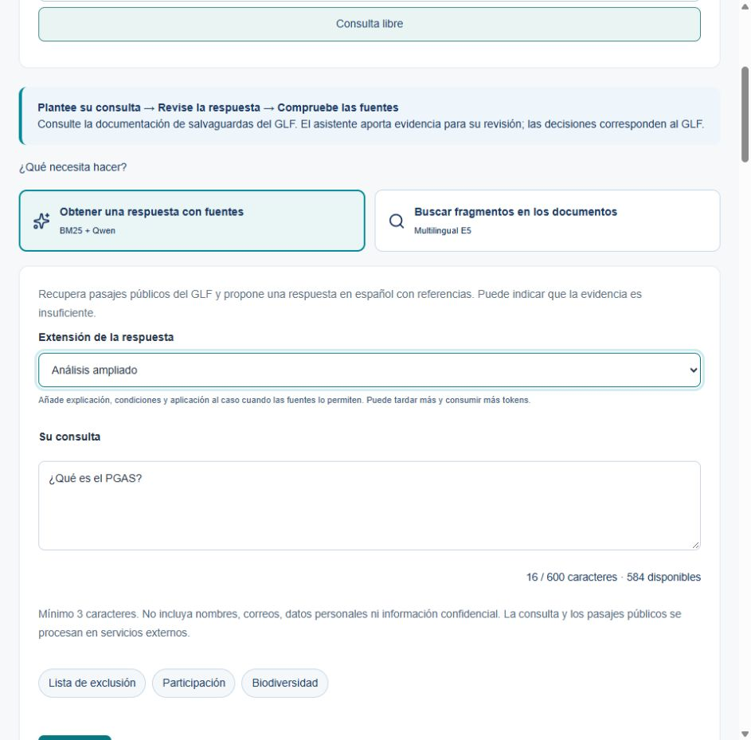
El reloj informa el tiempo transcurrido. El nombre del método o modelo y las etapas se reciben del servidor: búsqueda de documentos, preparación de evidencia, generación de Qwen y comprobación de referencias, según la ruta elegida. En E5 se informa también la transformación de la consulta en un vector. El reloj no representa un porcentaje de avance ni una medida de calidad.
Detener espera libera la pantalla y conserva la pregunta. Una solicitud ya recibida podría continuar y contabilizarse en el servicio externo. Espere antes de repetir una consulta larga. Si se agota el tiempo, la pantalla explica lo sucedido y ofrece reintentar cuando corresponda.
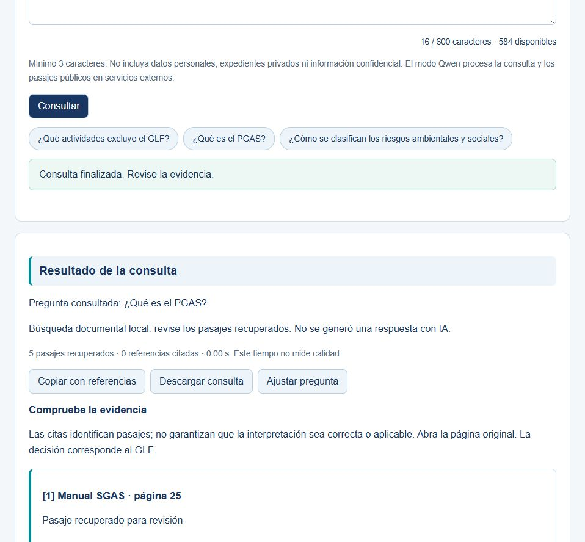
Cada resultado incluye documento, página e identificador de pasaje. Abra la fuente original para comprobar contexto, excepciones y vigencia. El puntaje de recuperación, cuando se consulte por API, ordena pasajes y no indica certeza. El tiempo mostrado corresponde a esa consulta, no a una evaluación estadística del sistema.
Si el servicio se abstiene, significa que no pudo producir una respuesta con evidencia suficiente bajo sus controles. No interprete esa abstención como inexistencia del requisito. Consulte el documento original o al especialista. Si aparecen pasajes en una abstención, son material de apoyo y no citas de una afirmación generada.
Copiar con referencias y Descargar consulta conservan la pregunta, respuesta, pasajes, fuentes, páginas, modelo e identificador de ejecución. La descarga es un archivo de texto. Ajustar pregunta vuelve al campo para reformularla; el resultado anterior no se atribuye a la nueva pregunta.
Consultas de esta sesión permite recuperar las últimas cinco respuestas sin volver a invocar el servicio. Se conserva únicamente en la página actual y se elimina al recargar, salir o cambiar de contexto. Vaciar historial lo borra de la pantalla. Este historial es independiente de las notas de revisión que un usuario autorizado guarda por riesgo.
Detalles de esta ejecución muestra el modelo, modo elegido, tiempo, versión e identificador disponibles. Cuando el servicio los reporta, incluye política, huella del corpus, intentos, tokens de entrada y salida y límite de generación. Los tokens no son un precio ni un porcentaje de precisión; el aviso parcial indica que falta información de alguna llamada. Se usa para comprender la ejecución y reportar un problema; no son métricas de precisión.
Puede preguntar qué actividades figuran en la lista de exclusión, qué es un PGAS o cómo se describen las categorías ambientales y sociales. Es preferible una pregunta concreta a copiar un expediente completo. Para un riesgo específico, describa la actividad y el aspecto que quiere contrastar sin incluir nombres personales, cédulas ni datos reservados.
Una pregunta sobre la aprobación de un proyecto particular o información que no está en las fuentes debe remitirse a la revisión humana. La recuperación de una definición no basta para concluir que una actividad está permitida o excluida.
| Mensaje o síntoma | Qué hacer |
|---|---|
| Texto demasiado corto o largo | Consulte el contador: Qwen y demostración local admiten 3 a 600 caracteres; E5 del portal, 10 a 1500 |
| Sin conexión o tiempo agotado | La pregunta se conserva; vuelva a consultar cuando haya conexión o transcurra un momento |
| Sesión vencida o acceso restringido | Inicie sesión de nuevo o solicite al administrador el acceso correspondiente |
| Corpus no preparado | Ejecute python -m src.data_processing y vuelva a abrir la aplicación |
| Servicio RAG sin configurar | Utilice búsqueda local o solicite configuración al equipo |
| Respuesta inválida o citas no verificadas | El resultado no se presenta como evidencia validada; ajuste la pregunta o consulte las fuentes |
| La generación quedó incompleta | La salida parcial se retira. Revise los pasajes y formule una pregunta más concreta o cambie la extensión antes de intentar de nuevo |
| Cuota o límite temporal | Espere el plazo indicado y evite repetir solicitudes |
| Cita que no respalda la afirmación | Registre pregunta, pasaje y discrepancia para revisión técnica |
| Fuente cambia o no abre | Revise el enlace oficial y regenere el corpus con una versión nueva |
La recuperación local no genera respuestas; Qwen requiere la conexión remota configurada. La calidad normativa se contrasta con fuentes y revisión especializada; las pruebas funcionales no equivalen a una estimación de exactitud. No publique expedientes ni claves en el repositorio.
Copiar datos del problema conserva método, código e identificador, sin la pregunta ni credenciales. Para solicitar soporte, adjunte esos datos en Issues del repositorio académico. La aplicación no envía reportes automáticamente. Las consultas normativas corresponden al especialista del GLF.
Abra una terminal en la raíz del repositorio. Utilice Python 3.12 y cree un entorno virtual antes de instalar dependencias.
python -m venv .venv
.venv\Scripts\activate
python -m pip install -r requirements.txt
python -m src.data_processing
python -m src.train
python -m app.appEn Linux o macOS active el entorno con source .venv/bin/activate. Abra http://127.0.0.1:8766. La preparación inicial requiere Internet para descargar los PDF oficiales. Si una URL cambia, el proceso falla de forma visible y debe actualizarse el manifiesto y la versión del corpus.
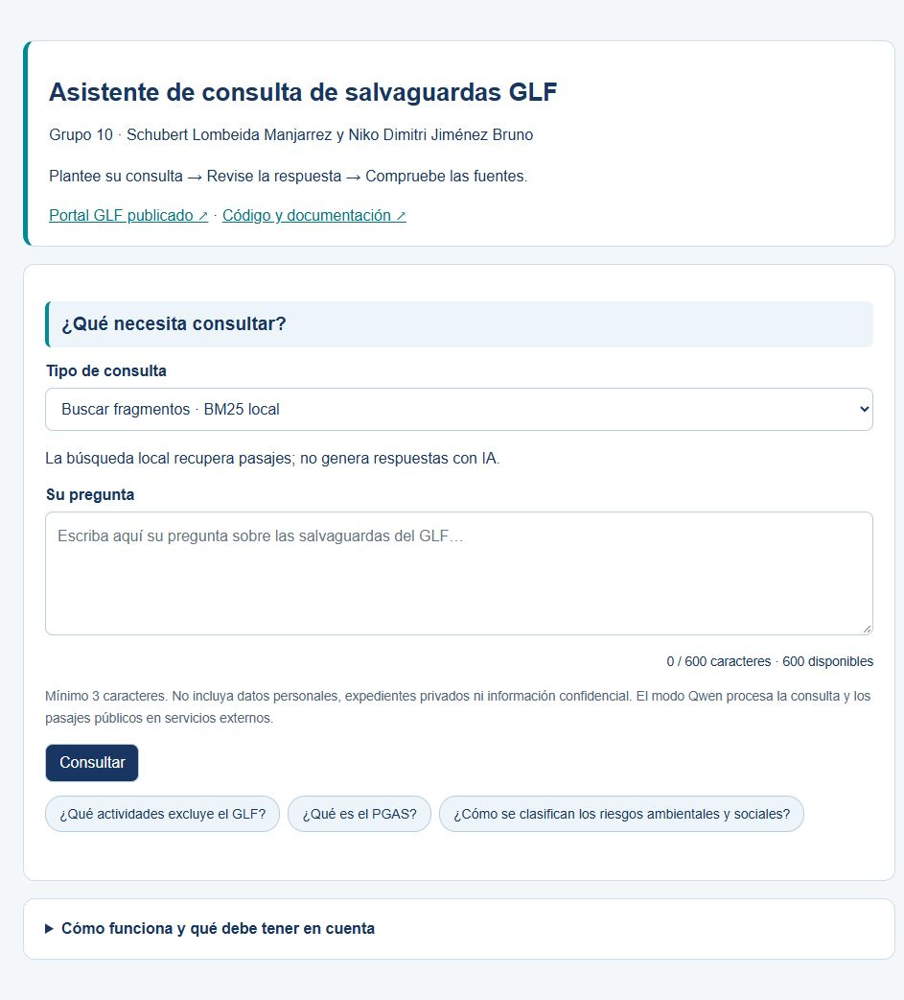
La pantalla presenta la caja de pregunta, el modo de consulta, el botón Consultar y ejemplos. Escriba entre 3 y 600 caracteres. Un ejemplo rellena la caja para que pueda leerlo o modificarlo antes de consultar. El botón muestra progreso y se bloquea durante la operación.
El modo Búsqueda local de pasajes funciona sin claves y utiliza BM25. Devuelve texto recuperado para revisión y lo identifica explícitamente como búsqueda sin generación. El modo Respuesta con IA del servicio del portal necesita que el equipo configure GLF_RAG_URL y GLF_RAG_KEY en el servidor. No escriba claves en el navegador ni las agregue a un cuaderno.
El archivo index.html reúne los informes, el código y la evidencia de evaluación. En Documentación puede buscar por tema, elegir un informe y leerlo en pantalla. Cada informe ofrece su fuente en GitHub y sus versiones Word y PDF. El menú Portal GLF abre el acceso al asistente publicado; el índice no solicita ni almacena credenciales.
El contenido audiovisual se organiza en un pitch de cinco minutos y un video de diez respuestas técnicas. Los enlaces de reproducción se muestran en el índice cuando están registrados en el catálogo de videos.
Grupo 10 · Schubert Lombeida Manjarrez y Niko Dimitri Jiménez Bruno · Edición 24 de octubre de 2026
La entrega reúne la implementación RAG, seis informes temáticos, cinco cuadernos y evidencia de evaluación. El punto de entrada es index.html, que permite leer los informes, descargarlos y acceder a su fuente en GitHub. El menú ofrece dos áreas: Documentación y Portal GLF.
En Documentación se recomienda comenzar por el manual de usuario, continuar con arquitectura y revisar los informes de datos, optimización, ética y planificación según el criterio de evaluación. Los documentos Word y PDF conservan Arial 11, títulos Arial 12 en negrita, texto negro, tablas grises y numeración de páginas. Las figuras se mantienen a color.
Portal GLF abre el asistente publicado. La profesora utiliza la cuenta facilitada por el equipo mediante el portal de la universidad. El índice y el repositorio no solicitan ni contienen contraseñas. La aplicación académica local permite reproducir la recuperación sobre fuentes públicas sin acceder a expedientes privados.
| Criterio | Documento o recurso | Contenido |
|---|---|---|
| Problema y planificación | docs/planificacion.md | Usuarios, objetivos, alcance, etapas y riesgos |
| Análisis de datos | docs/analisis_datos.md | Fuentes, conjuntos separados y seis figuras |
| Diseño técnico | docs/arquitectura.md e integration | Portal, servicios, modelos y flujos de consulta |
| Optimización | docs/optimizacion.md y cuaderno 04 | Comparación histórica, sensibilidad y protocolo reproducible |
| Ética | docs/consideraciones_eticas.md | Sesgos, privacidad, explicabilidad y responsabilidad |
| Uso de la aplicación | docs/manual_usuario.md | Modos, etapas, fuentes, exportación y errores |
| Código y pruebas | src, app, tests y .github/workflows/ci.yml | Ejecución local y comprobaciones automáticas |
| Evaluación | evaluation y results | Formatos, resultados con alcance y registros de consultas |
| Presentación audiovisual | Catálogo de videos del índice | Pitch y respuestas técnicas |
El corpus público reconstruido contiene siete documentos, 98 páginas y 271 fragmentos. Los experimentos históricos de recuperación utilizaron otro corpus de 585 fragmentos. Sus resultados se presentan con la configuración y el contexto de desarrollo que les corresponden.
La versión documentada del portal es 0.7.62 y el servicio RAG corresponde al adaptador 1.7. Las 33 pruebas académicas verifican comportamiento del código. Al incluir portal, base de datos y servicio, el registro de comprobación contiene 326 pruebas. Estos conteos no representan preguntas evaluadas por especialistas ni estimaciones de exactitud normativa.
Las consultas reales registran respuestas, fuentes, tiempos y límites observados. Una referencia técnicamente válida no demuestra por sí sola respaldo semántico. La evaluación independiente se define en evaluation/README.md; las métricas publicadas corresponden a desarrollo y funcionamiento, sin atribuirles generalización externa.
El pitch organiza la presentación en siete bloques y ocho pantallas. Su duración máxima es cinco minutos y la demostración utiliza el portal GLF real.
| Intervalo | Contenido |
|---|---|
| 00:00 a 00:30 | Problema y equipo |
| 00:30 a 01:30 | Datos y metodología |
| 01:30 a 02:15 | Desarrollo y optimización |
| 02:15 a 03:15 | Interfaz, casos de uso y manejo de errores |
| 03:15 a 04:00 | Evaluación y resultados |
| 04:00 a 04:45 | Consideraciones éticas |
| 04:45 a 05:00 | Cierre y acceso al proyecto |
El video técnico responde las diez preguntas oficiales en orden. Schubert Lombeida Manjarrez responde las impares y Niko Dimitri Jiménez Bruno las pares. Cada respuesta dura como máximo dos minutos y mantiene al expositor visible en cámara. La pregunta 9 desarrolla la opción C, correspondiente a texto y modelos de lenguaje.
La sección audiovisual del índice utiliza un catálogo de enlaces. Admite archivos MP4 del repositorio y enlaces a una plataforma de reproducción. Una grabación editada identifica los recortes de espera y no transforma la duración del montaje en una medición de latencia.
README.md contiene los comandos de instalación y ejecución. Los cuadernos se ordenan desde exploración hasta evaluación. data/sources.json identifica los PDF oficiales; integration/source_manifest.json relaciona los componentes copiados con su origen y huella. Los registros históricos se conservan sin alterar sus resultados.
Los formatos de evaluación exigen pregunta, pasajes correctos, revisor independiente, versión de corpus y partición. Las preguntas frecuentes son un insumo de muestreo y no sustituyen la anotación de evidencia. El protocolo separa desarrollo, validación y prueba, y distingue recuperación, respaldo de afirmaciones y abstención.
Repositorio: https://github.com/schubertlombeida/RAG.SALVAGUARDAS.GLF.UEES
Asistente del portal: https://glf-postulaciones.vercel.app/internal/evidence
El portal conserva sus controles de acceso. La revisión del material académico se realiza sobre fuentes públicas, código y evidencia documentada.
IMPLEMENTACIÓN PUBLICADA
Consulte evidencia normativa, revise las fuentes y observe qué modelo interviene en cada etapa.
Las credenciales se comparten por el portal de la universidad. Este índice no solicita ni almacena contraseñas.
Abrir el asistente ↗Ir al inicio del portal GLF ↗Pruebe una consulta como «¿Qué es un PGAS?». Compare los modos breve y ampliado y compruebe la respuesta en el documento original.
Una consulta concreta sobre salvaguardas.
El sistema recupera pasajes e informa la etapa y el tiempo transcurrido.
La decisión técnica permanece en manos del especialista.